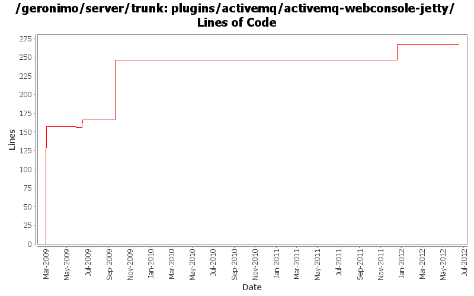

[root]/plugins/activemq/activemq-webconsole-jetty
 src
(0 files, 0 lines)
src
(0 files, 0 lines)
 main
(0 files, 0 lines)
main
(0 files, 0 lines)
 history
(1 files, 129 lines)
history
(1 files, 129 lines)
 plan
(1 files, 29 lines)
plan
(1 files, 29 lines)

| Author | Changes | Lines of Code | Lines per Change |
|---|---|---|---|
| Totals | 12 (100.0%) | 314 (100.0%) | 26.1 |
| djencks | 10 (83.3%) | 308 (98.1%) | 30.8 |
| gawor | 1 (8.3%) | 5 (1.6%) | 5.0 |
| xiaming | 1 (8.3%) | 1 (0.3%) | 1.0 |
Update trunk version to 4.0.0-SNAPSHOT
1 lines of code changed in 1 file:
GERONIMO-6240 Make several base geronimo functions (kernel, deployer, etc) DS services and make the car-maven-plugin take advantage of that. Server assembly doesn't work yet, builds framework.
26 lines of code changed in 1 file:
GERONIMO-5290 fix many of the deprecation warnings from maven 3
8 lines of code changed in 1 file:
GERONIMO-4566 don't include jsps, welcome file processing is fixed. Update jetty7 version. Use all the release versions up for vote, so include repos for them. Use snapshot xmlbean-maven-plugin. Make more junit-4 friendly by renaming some test helper classes. Mostly merge of rev 816732 from branches/2.2
80 lines of code changed in 1 file:
GERONIMO-4655 upgrade version to 3.0-SNAPSHOT, make a few things more consistent
1 lines of code changed in 1 file:
GERONIMO-4753 and snapshot and source-repository cleanup
3 lines of code changed in 1 file:
a few more fixes
5 lines of code changed in 1 file:
GERONIMO-4684, GERONIMO-4685 Use our tomcat build, configure tomcat using server.xml. Also includes some spec jar updates including using our jaxb spec jar
6 lines of code changed in 1 file:
GERONIMO-4655 some pom cleanup so the release plugin might be able to branch
9 lines of code changed in 1 file:
dependency pruning
26 lines of code changed in 1 file:
GERONIMO-4560 fix build problems from previous commit. Not sure if testsuite is completely stable
20 lines of code changed in 1 file:
GERONIMO-4560 run the activemq web console on geronimo
129 lines of code changed in 1 file: